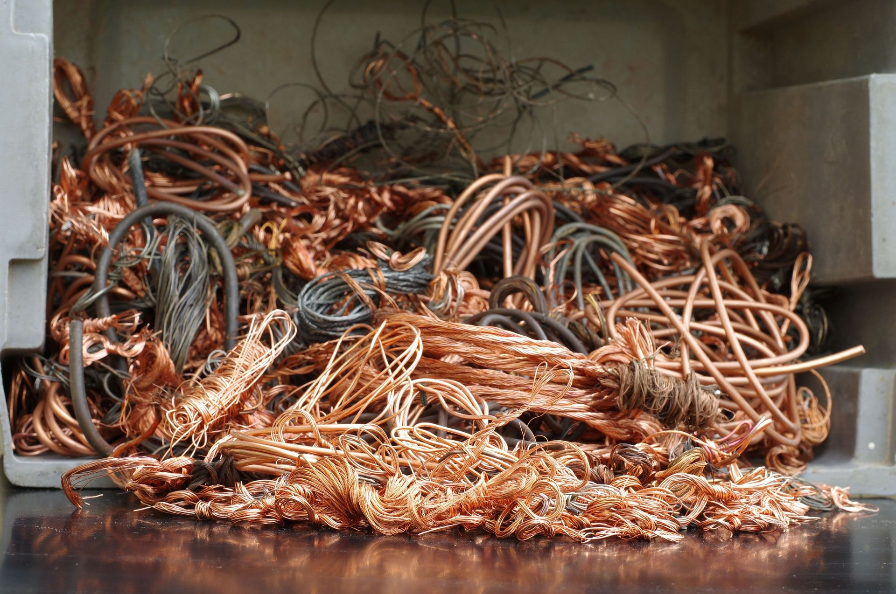
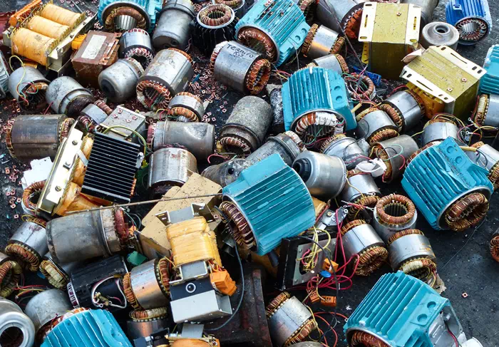
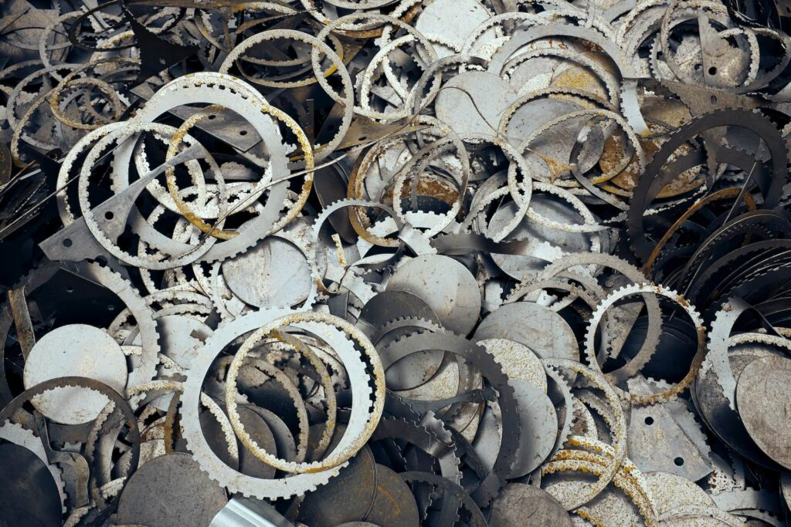
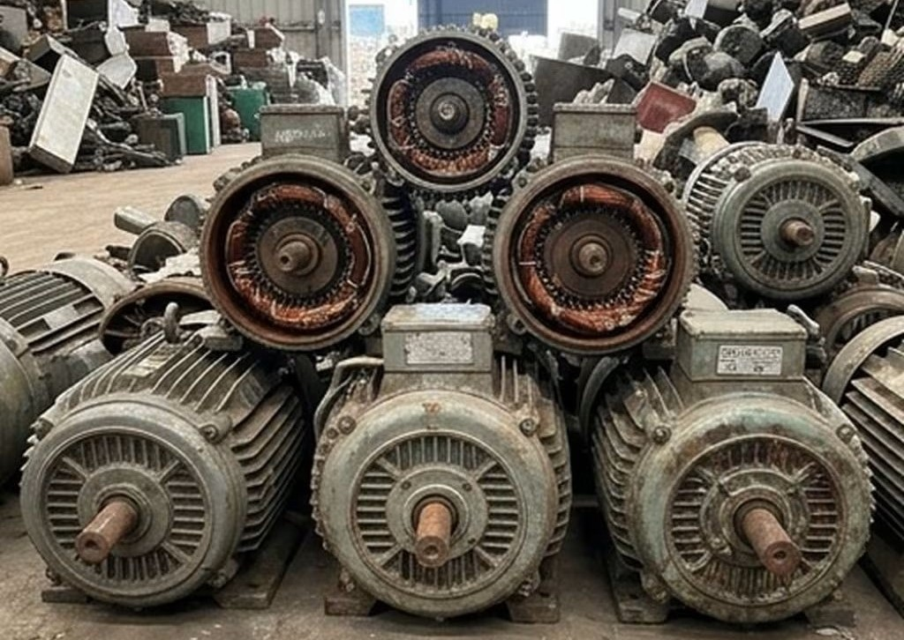

Recovering value. Returning metals to industry.
Ashiga India specialises in sourcing and processing electric motor scrap, alternators and selected metal-bearing materials. From our covered processing facility in Sahnewal, Ludhiana, we recover copper, aluminium and ferrous metals for further industrial use.



Specialist Materials. Practical Expertise.
Effective metal recovery begins with understanding the scrap. Motor size, construction and metal composition all influence how materials should be assessed, sorted and processed.
At Ashiga India, our focus is on recovering usable metals from complex assemblies and preparing them for their next stage of industrial use.
Materials We Process
Targeted intake and processing of complex copper, aluminium, and ferrous metal scrap streams.

Electric Motor Scrap
Small, large and mixed electric motors containing copper windings, aluminium components and ferrous metals.
Inquire on WhatsApp
Alternator Scrap
Automotive alternators processed to separate copper windings, aluminium housings and ferrous components.
Inquire on WhatsApp
Selected Appliance Scrap
Selected motor-bearing appliances and assemblies, assessed according to their composition and processing requirements.
Inquire on WhatsApp
Other Metal-Bearing Materials
Additional scrap grades considered following a review of material details, photographs, quantity and location.
Inquire on WhatsAppThe Space to Process. The Knowledge to Recover.
Our 54,000 sq ft covered processing facility in Sahnewal, Ludhiana, has an annual processing capacity of 25,000 metric tonnes.
The facility brings together scrap sorting, dismantling, processing and recovered-material handling, supporting the movement of metal-bearing scrap into saleable metal streams.

From Scrap to Recovered Metals
A structured, circular recovery cycle designed to maximize purity and industrial value.
Sourcing and Assessment
We assess the material type, condition and composition to establish suitability and agree commercial terms.
Sorting and Processing
Scrap is sorted and processed using dismantling and separation methods suited to its construction and material characteristics.
Metal Recovery
Copper, aluminium and ferrous components are separated and organised into saleable material streams.
Supply to Industry
Recovered metals are supplied to trade and industrial buyers against agreed material descriptions and specifications.
Working With Ashiga India
Connecting scrap suppliers and industrial metal buyers through structured assessment, reliable processing, and clear commercial terms.
For Scrap Suppliers
We welcome enquiries from domestic and international suppliers of electric motor scrap, alternators and other suitable metal-bearing materials. Share your material details, photographs, quantity and location for assessment.
For Metal Buyers
Contact us with your requirements for recovered copper, aluminium or ferrous scrap. Include the required grade, quantity and delivery location so we can discuss suitable available material.
Ready to Transform Your Metal Scrap Into Valuable Resources?
Partner with Ashiga AI Solution for certified scrap processing, transparent assays, and reliable circular supply for foundries and smelters worldwide.